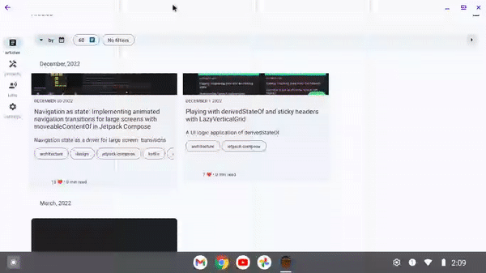

Tiler


Please note, this is not an official Google repository. It is a Kotlin multiplatform experiment that makes no guarantees about API stability or long term support. None of the works presented here are production tested, and should not be taken as anything more than its face value.
Introduction
Tiling is a state based paging implementation that presents a sublist of paged dataset in a simple List.
It offers constant time access to items at indices, and the ability to introspect the items paged through.
The following are examples of paged UI/UX paradigms that were built using tiling:
| Basic pagination | Pagination with sticky headers | Pagination with search | Pagination with placeholders |
|---|---|---|---|
 |
 |
 |
 |
For large screened devices:
| Pagination with adaptive layouts | Pagination with adaptive layouts, search and placeholders |
|---|---|
 |
 |
Tiling is achieved with a Tiler; a pure function that has the ability to adapt any generic method of the form:
fun <T> items(query: Query): Flow<List<T>>
into a paginated API.
It does this using a Tiler:
fun interface ListTiler<Query, Item> {
fun produce(inputs: Flow<Tile.Input<Query, Item>>): Flow<TiledList<Query, Item>>
}
- The inputs modify the queries for data
- The output is the data returned over time in a
Listimplementation: ATiledList.
Typical use of Tiling is the toTiledList extension on a Flow<Query>:
val pageRequestFlow = MutableSharedFlow<Tile.Input<Int, Item>>()
val items: Flow<TiledList<Int, Item>> = pageRequestFlow.toTiledList(
listTiler(
order = Tile.Order.Sorted(
comparator = compareBy(Int::compareTo)
),
limiter = Tile.Limiter(
maxQueries = 3
),
fetcher = { page ->
repository.itemsFor(page)
}
)
)
Requests for pages are sent on each emission of pageRequestFlow:
// Request page 1
pageRequestFlow.emit(Tile.Request.On(1))
// Request page 5
pageRequestFlow.emit(Tile.Request.On(5))
// Stop updates from page 1
pageRequestFlow.emit(Tile.Request.Off(1))
// Delete cached results from page 1
pageRequestFlow.emit(Tile.Request.Evict(1))
For most practical purposes, the TiledList produced should be anchored or
"pivoted" around a particular page; typically the user's
scroll position. For how to implement this with the library, see the
basic example.
Get it
Tiler is available on mavenCentral with the latest version indicated by the badge at the top of this readme file.
implementation com.tunjid.tiler:tiler:version
License
Copyright 2021 Google LLC
Licensed under the Apache License, Version 2.0 (the "License");
you may not use this file except in compliance with the License.
You may obtain a copy of the License at
https://www.apache.org/licenses/LICENSE-2.0
Unless required by applicable law or agreed to in writing, software
distributed under the License is distributed on an "AS IS" BASIS,
WITHOUT WARRANTIES OR CONDITIONS OF ANY KIND, either express or implied.
See the License for the specific language governing permissions and
limitations under the License.